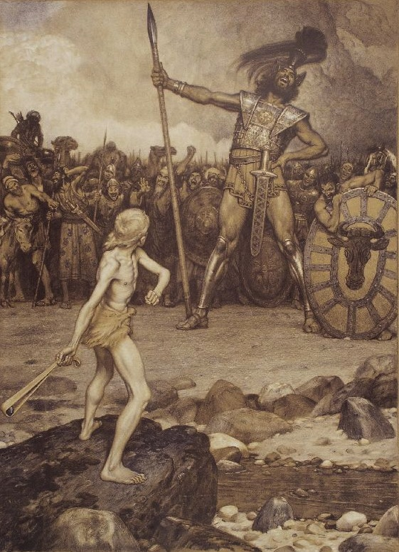

大卫与哥利亚

士师时期的外邦民族分类

温习 - 救赎历史-约
- 神与选民的约层层递进，完整的救赎故事线：
- 亚当之约（工作之约）：人类在伊甸园中的责任
- 挪亚之约：神的保全，承诺不再用洪水毁灭世界
- 亚伯拉罕之约：从一个游牧家族，神拣选亚伯拉罕和他的后裔成为大国，赐福万民
- 摩西之约：律法和十诫
- 大卫之约：神应许永恒的弥赛亚王权
- 新约：在基督里的完全救赎，所有应许的最终实现
- 每个约都揭示神救赎计划的不同层面，最终指向基督的工作
温习 - 救赎历史-恢复神的国度
- 自从人类的堕落，上帝应许敬虔的后裔将恢复神的创造。
- 神从一开始的计划就是要在地上建立祂的国
- 神拣选的子民-亚当-亚伯拉罕-以撒-雅各-大卫-耶稣基督
背景
- 神正以神圣的旨意推动救赎历史，以实现祂建立国度的目标。
- 在士师时期，以色列经历了一段螺旋式下降的堕落，最终导致近乎无政府状态。
- 在这个背景下，以色列民要求一位像列国一样的君王，能走在他们前面为他们争战。
- 神赐给他们扫罗作王。然而，由于扫罗的不顺从，神最终弃绝了他
- 神借着敬虔的波阿斯和路得，预备大卫的家谱。
- 神借着撒母耳膏立牧羊人的儿子大卫。
17章的大纲
- 歌利亚的挑战（1-11节）
- 大卫的主动呼应（12-37节）
- 大卫拒绝扫罗的盔甲（38-39节）
- 大卫击败歌利亚（40-51节）
世界观的对立
- 神的选民<->世俗的势力
- 耶和华<->外邦的神
- 军事和科技落后的以色列人<->非利士人
- 歌利亚和非利士人对神的子民发动战争。
- 歌利亚的言语充满了蔑视，而大卫的言语则彰显了对耶和华的信心和信靠。
与其他旧约故事相同之处
- 上帝的大能拯救
- 上帝的子民的得胜
- 因依靠神，弱小的神的子民打败强大的敌人
- 神与魔鬼势力之间的持续属灵争战
基督的预表
- 大卫对神的信心对比扫罗的不顺服
- 大卫那更大的后裔——弥赛亚耶稣的胜利。
- 大卫是“两军之间的人”。这正是耶稣所做的：祂站在祂的子民和他们的敌人之间，施以决定性的一击。
- 大卫击打歌利亚的头部，这与创世记3:15中女人的后裔将打碎引诱者（蛇）的头相呼应。
- 这场单挑为大卫日后成为以色列王铺路，同样，基督透过十字架的牺牲和战胜死亡的权势，建立神的国度。
- David’s suffering serves as a typological pattern for the anointed-yet-rejected Son of David.~Jason Hood
结论
- 大卫与哥利亚的故事超越了个人面对困难的励志故事。它在救赎历史的宏大叙事中具有真正的救赎历史意义。
- 这个故事彰显了神对祂的国度计划的持续推进，以及祂如何通过拣选的仆人实现祂的旨意。
- 最终，这个故事指向了耶稣基督，祂是大卫的子孙，通过祂的工作，神击败撒旦，并开启了神的国度。
应用
- 依靠上帝，即使是在看似不可能的事情上。
- 在生活上和罪恶的争战，我们并非靠自己的力量，而是靠着神所赐的信心、平安和祂的话语